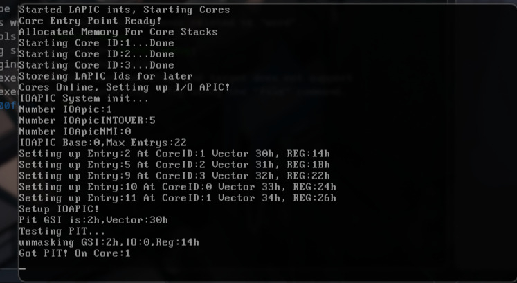

For a first post, I guess I should show my main project right? Well I'm working on a protected mode os, right now ive been working on getting a lot of the basic things working. like starting up cores and passing IRQs to cores, etc
I`ll but a image of it working here when I can be bothered (its like 6am while I'm writing this)
The tldr of what any of this means is split into about 4 steps
Currently heres this is the full explanasion of how the bootloader works, may chanage later idk. The Bootloader starts with just the boot sector at 0x7c00 from there it loads the kernel loader into 0x7e00 then moves to protected mode. After doing all that it loads the main kernel into 0x180000 (1.5 mib into memory).
So in even more simple terms Bootloader(0x7c00) loads the KernelLoader(0x7e00) finnaly this loads the main kernel into 0x180000.
To keep compatability with older computers intel made the mili-core CPU's be found though tables and enabled though MMIO. This step is finding how much cores there are and finding there Ids, Address`s, etc. The Same is done for something called the IOAPIC and I'm not goning to explan that now as the sun is rising as im writing this.
This is quite simple only in theory. This is all about giving whatever asked for memory a certen amount of bytes, while also allowing apps to give the memory back, without casuing fragmentasion. This took me about 3 days to make, I didnt have much help for the planing and wasnt remaking any existing systems, so that makes sence. But now it works and seems to be both fast and effective at not fragmenting.
This is self explanitory but is complex. So first I grab the base LAPIC address I found while in the scaning step, then I run a init IPI (basicly just telling the AP to start up), All cores start in real mode(16 bit mode), so often the first step is to setup a GDT, flip the CR0 bit, Far Jmp, Load idt(in my case im using the same one for all cores, might change) then load the stack, this one I had some issues with because I may or maynot have used a shr while trying to mul... I dont wonna hear it.
IRQs before mili-core where managed by the PIC, but this has no possible AP support. So someone(i'm guessing intel) made the APIC. It's job is to alloc the OS kernel to say things about IRQs, like what core should this go to? is this importent? Is it even active? The IOAPIC allows me to control all of this. So in the image above what you see is the IOAPIC being told to give a IRQ from the PIT to AP0(Core1), Now for a while I did have issues with no IRQs being called at all, but it does turn out I did forget it enable the IRQs on the AP's, so if anyone else runs into this web page wondering why that exact thing isn't working double check your enabling the IRQs on ALL, you hear me **ALL** cores, not just the BSC, learnt that the hard way!